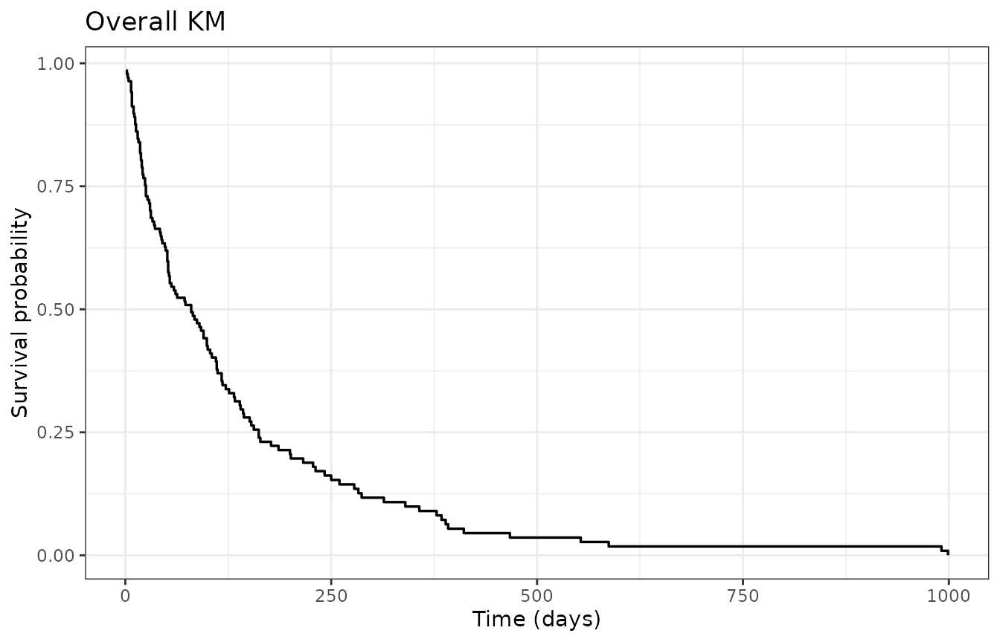
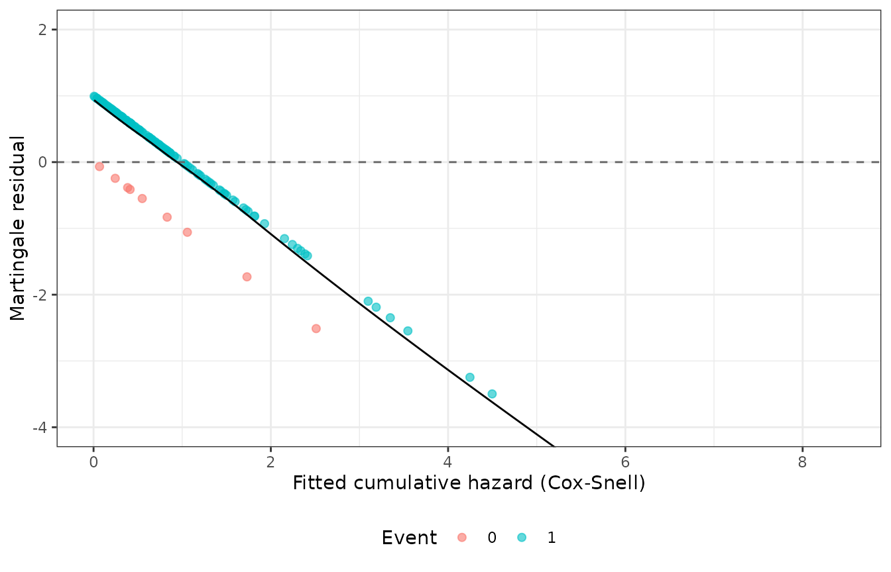
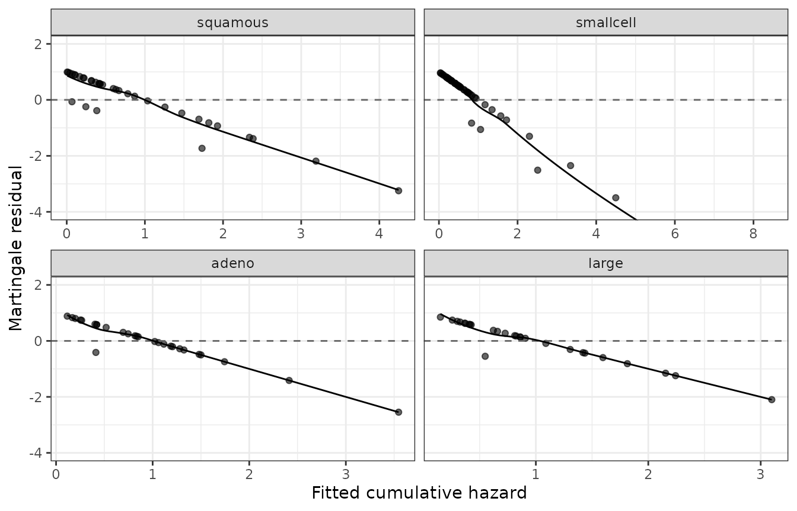
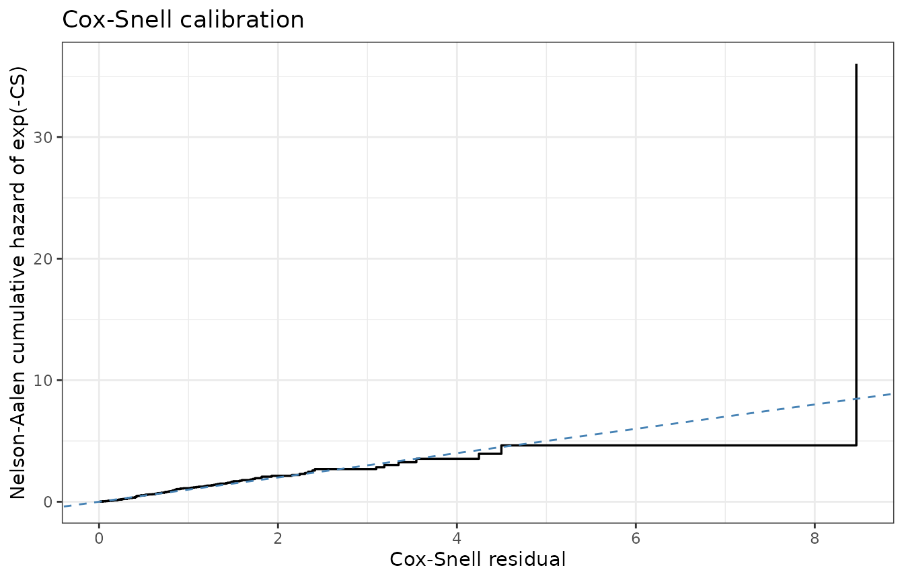
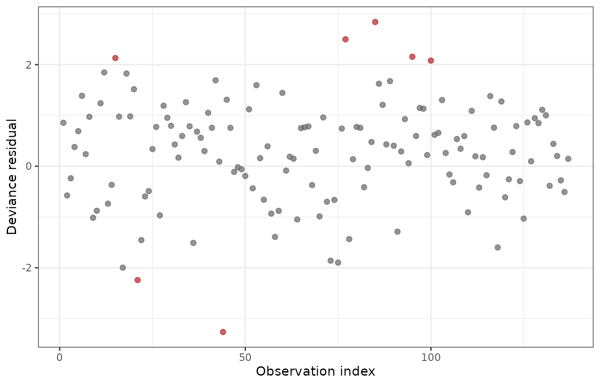
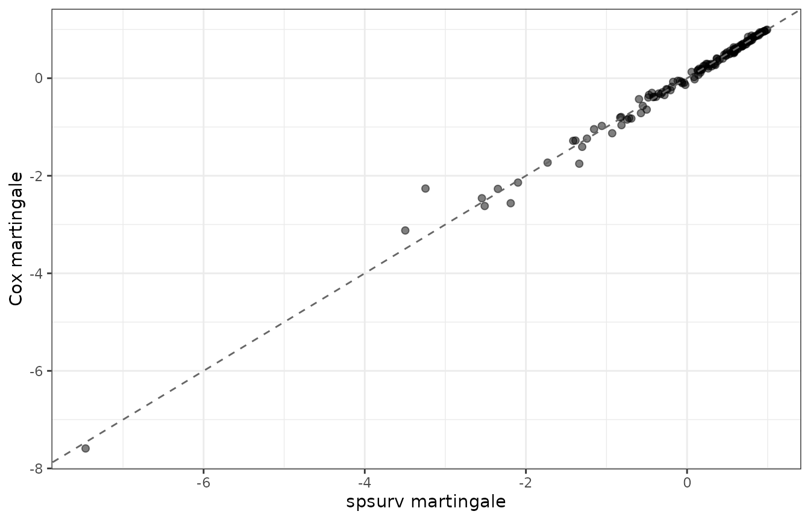

Residual diagnostics help you decide whether to trust a fitted model, add covariates, change the regression family (PH vs PO), or simplify the Bernstein degree.
Before you model
library(spsurv)
library(survival)
library(ggplot2)
data(veteran)
veteran$celltype <- factor(veteran$celltype)
eda <- data.frame(
n = nrow(veteran),
events = sum(veteran$status),
censored = sum(1 - veteran$status),
pct_censored = round(100 * mean(1 - veteran$status), 1)
)
eda
#> n events censored pct_censored
#> 1 137 128 9 6.6
km_all <- survfit(Surv(time, status) ~ 1, data = veteran)
km_df <- data.frame(
time = km_all$time,
surv = km_all$surv
)
ggplot(km_df, aes(x = time, y = surv)) +
geom_step(linewidth = 0.6) +
labs(x = "Time (days)", y = "Survival probability", title = "Overall KM") +
theme_bw()
Kaplan-Meier survival for the veteran data (overall).
Fit and summarize
fit <- bpph(
Surv(time, status) ~ karno + celltype,
degree = 5,
data = veteran,
approach = "mle",
init = 0
)
summary(fit)
#> Call:
#> bpph(formula = Surv(time, status) ~ karno + celltype, degree = 5,
#> data = veteran, approach = "mle", init = 0, model = "ph")
#>
#> Bernstein PH model:
#> Regression coefficients:
#> Estimate 2.5% 97.5% Std. Error z value Pr(>|z|)
#> karno -0.0306 -0.0406 -0.0206 0.0051 -6.0 2e-09 ***
#> celltypesmallcell 0.7380 0.2458 1.2303 0.2511 2.9 0.003 **
#> celltypeadeno 1.1536 0.5800 1.7272 0.2927 3.9 8e-05 ***
#> celltypelarge 0.3302 -0.2110 0.8714 0.2761 1.2 0.232
#> ---
#> Signif. codes: 0 '***' 0.001 '**' 0.01 '*' 0.05 '.' 0.1 ' ' 1
#>
#> Exponentiated coefficients:
#> Estimate 2.5% 97.5%
#> karno 0.97 0.96 1.0
#> celltypesmallcell 2.09 1.28 3.4
#> celltypeadeno 3.17 1.79 5.6
#> celltypelarge 1.39 0.81 2.4
#>
#> ---
#> loglik = -716 AIC = 1450Use MLE plug-in fits for residual plots (Bayesian fits average over draws; see note at the end).
Visual check — martingale residuals
Martingale residuals should scatter around zero without a strong trend against fitted cumulative hazard.
mart <- residuals(fit, type = "martingale")
csnell <- residuals(fit, type = "cox-snell")
fitted_ch <- csnell
mart_df <- data.frame(
fitted = fitted_ch,
martingale = mart,
status = factor(veteran$status),
celltype = veteran$celltype
)
ggplot(mart_df, aes(x = fitted, y = martingale, color = status)) +
geom_point(alpha = 0.6, size = 1.8) +
geom_hline(yintercept = 0, linetype = "dashed", color = "grey40") +
geom_smooth(aes(group = 1), method = "loess", se = FALSE, color = "black", linewidth = 0.5) +
coord_cartesian(ylim = c(-4, 2)) +
labs(
x = "Fitted cumulative hazard (Cox-Snell)",
y = "Martingale residual",
color = "Event"
) +
theme_bw() +
theme(legend.position = "bottom")
Martingale residuals vs fitted cumulative hazard (Cox-Snell).
ggplot(mart_df, aes(x = fitted, y = martingale)) +
geom_point(alpha = 0.6, size = 1.5) +
geom_hline(yintercept = 0, linetype = "dashed", color = "grey40") +
geom_smooth(method = "loess", se = FALSE, color = "black", linewidth = 0.5) +
facet_wrap(~ celltype, scales = "free_x") +
coord_cartesian(ylim = c(-4, 2)) +
labs(x = "Fitted cumulative hazard", y = "Martingale residual") +
theme_bw()
Martingale residuals by cell type.
Visual check — Cox-Snell calibration
Under a well-specified model, the Kaplan-Meier of
exp(-CS) should track the Exponential(1)
reference (45-degree line on a cumulative-hazard scale).
km_cs <- survfit(Surv(csnell, veteran$status) ~ 1)
cs_df <- data.frame(
cs = km_cs$time,
cumhaz = -log(pmax(km_cs$surv, .Machine$double.eps))
)
ggplot(cs_df, aes(x = cs, y = cumhaz)) +
geom_step(linewidth = 0.6) +
geom_abline(slope = 1, intercept = 0, color = "steelblue", linetype = "dashed") +
labs(
x = "Cox-Snell residual",
y = "Nelson-Aalen cumulative hazard of exp(-CS)",
title = "Cox-Snell calibration"
) +
theme_bw()
Cox-Snell calibration: KM of exp(-CS) vs Exponential(1) reference.
Visual check — deviance residuals
Large deviance residuals flag observations poorly explained by the fitted model.
dev <- residuals(fit, type = "deviance")
dev_df <- data.frame(
index = seq_along(dev),
deviance = dev,
highlight = abs(dev) >= quantile(abs(dev), 0.95)
)
ggplot(dev_df, aes(x = index, y = deviance, color = highlight)) +
geom_point(size = 1.8, alpha = 0.7) +
scale_color_manual(values = c("FALSE" = "grey40", "TRUE" = "firebrick"), guide = "none") +
labs(x = "Observation index", y = "Deviance residual") +
theme_bw()
Deviance residuals (largest magnitudes highlighted).
Compare with Cox (reference)
cox_fit <- coxph(Surv(time, status) ~ karno + celltype, data = veteran)
mart_cox <- residuals(cox_fit, type = "martingale")
ggplot(data.frame(bp = mart, cox = mart_cox), aes(x = bp, y = cox)) +
geom_point(alpha = 0.5, size = 1.8) +
geom_abline(slope = 1, intercept = 0, linetype = "dashed", color = "grey40") +
labs(x = "spsurv martingale", y = "Cox martingale") +
theme_bw()
spsurv vs Cox martingale residuals.
Disagreement is expected in general (different likelihoods and baselines). Large outliers in the comparison warrant case-level review.
Gamma information stability
v <- vcov(fit, bp.param = TRUE)
stab <- data.frame(
gamma_information_stable = attr(v, "gamma_information_stable"),
kappa_gamma = signif(attr(v, "gamma_information_kappa"), 4)
)
stab
#> gamma_information_stable kappa_gamma
#> 1 TRUE 217000What to decide
-
gamma_information_stable == FALSE→ lower Bernstein degree; treatsurvfit()standard errors and bands as unreliable until stability improves.
Bayesian fits
For approach = "bayes", residuals() uses
posterior-mean cumulative hazards. For diagnostic plots comparable to
classical methods, refit with MLE or use posterior predictive checks
outside this vignette.